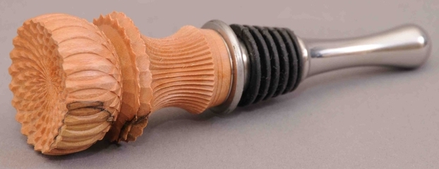

|
|

|
Materials Used in Ornamental Turning
Dogwood |
 Dogwood
Dogwood

Dogwood
Picture courtesy Richard Vanstrum Ornamentally Turned Objects This is an excellent wood for ornamental turning, though I have seen little use of it. The wood is highly dense but not as hard as woods like African Blackwood (Dogwood's Janka hardness = 9,560 N). The high density enables it to hold shapes very well, and the relative plain-ness of the wood allows for the ornamental turning cuts to show well. Ornamental Turning Notes It is not highly available, but it is also not costly. Due to the lack of availability, I recommend making a prototype as outlined above. Finishing Finishing this may be necessary to bring out the cuts. I use oil-based finishes. Be very cautious when applying the oil as it won't soak into the wood well except on the end grain. Color change is probable, so test on a scrap piece. Also, the oil will not soak in well, so care must be taken to not let it harden in unintended ways. Other More information is in The Wood Database. |